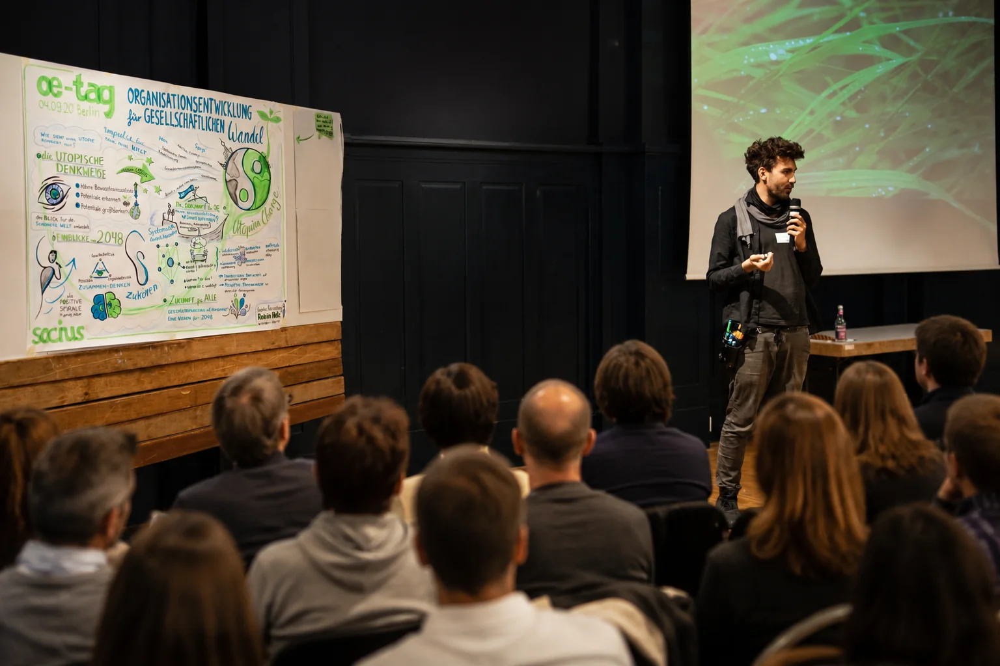
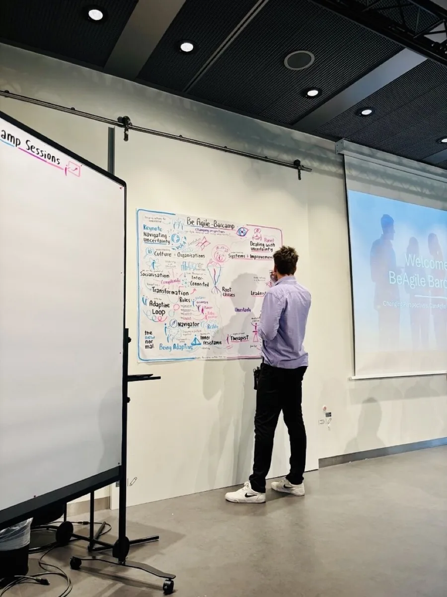
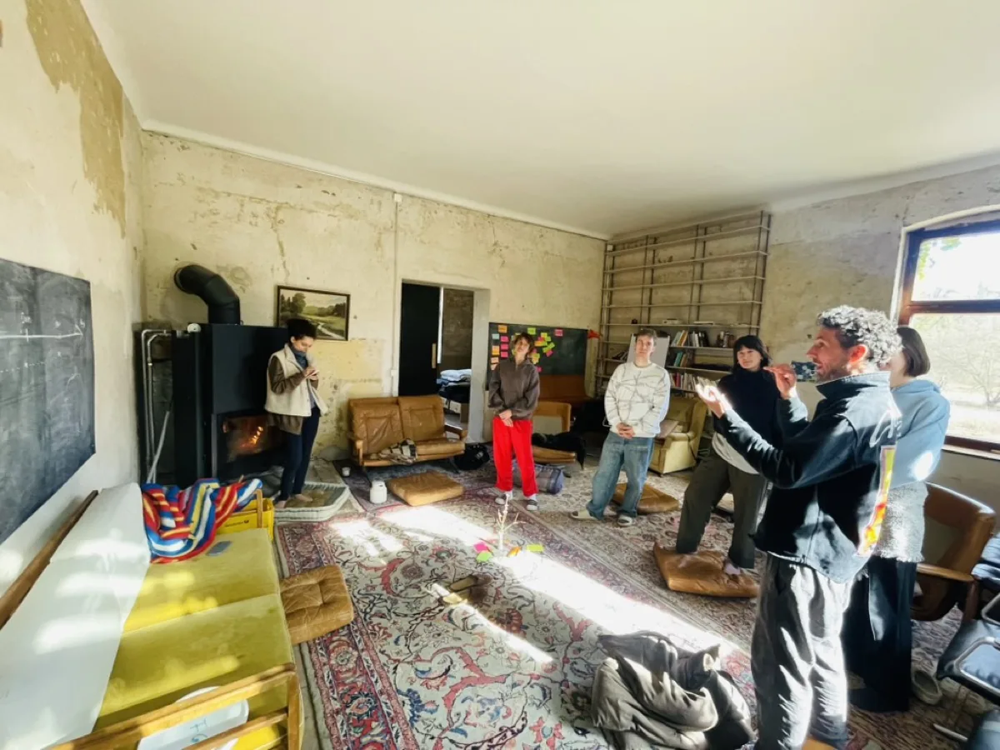
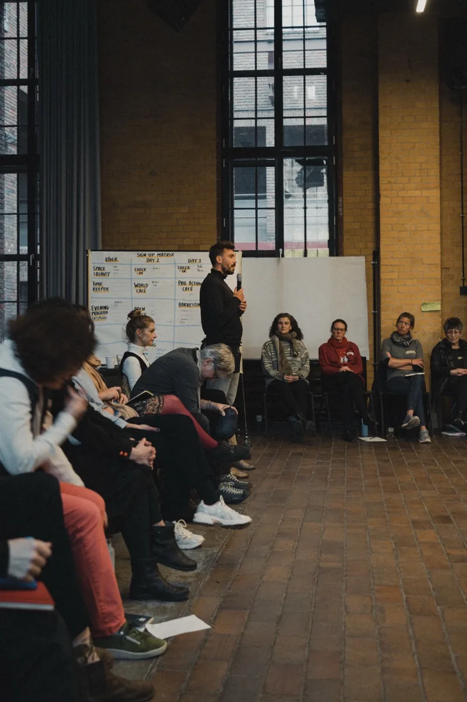
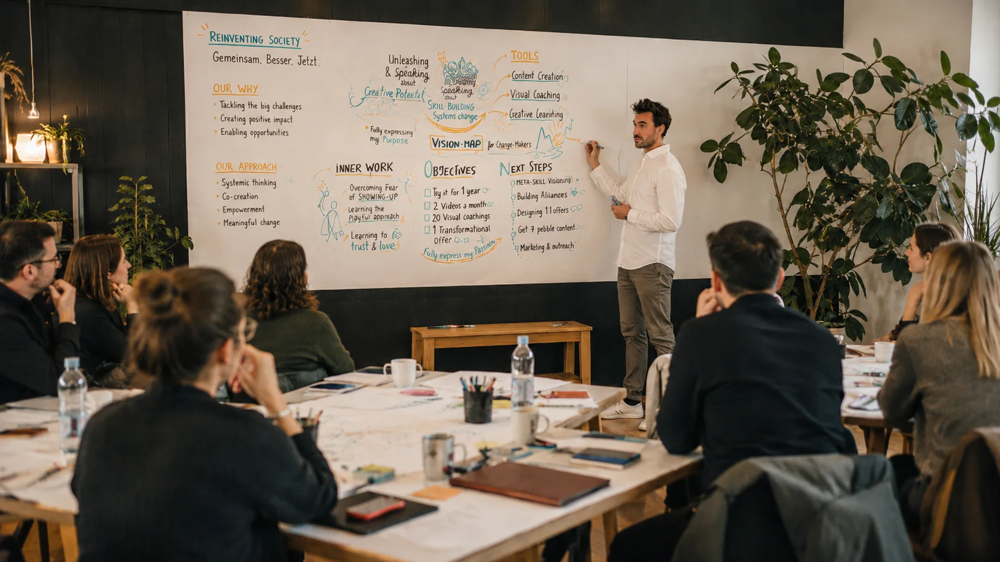
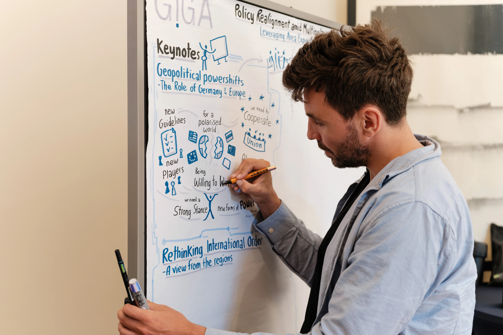
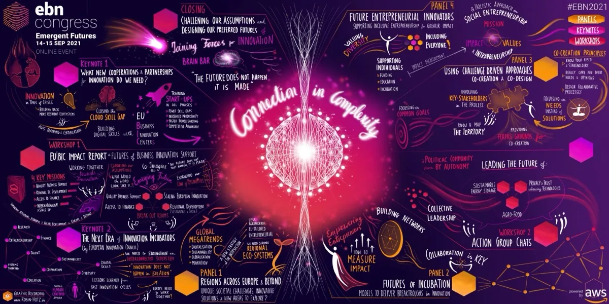
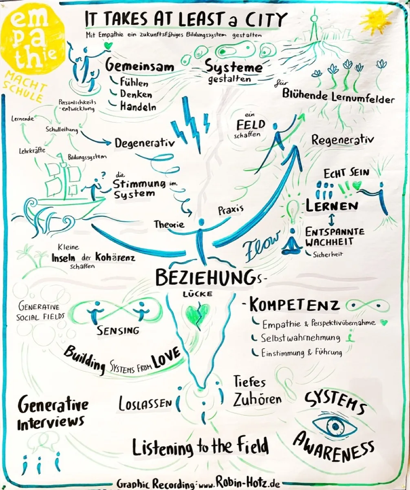

Drei Wege zu sichtbarer KlarheitThree paths to visible clarity
Moderation, Coaching und Visualisierung, einzeln oder kombiniert. Für Veranstaltungen, Teams und Organisationen im Wandel. Facilitation, coaching and visualisation, individually or combined. For events, teams and organisations in transition.

ModerationFacilitation
Event-Moderation, die Ihre Themen souverän auf die Bühne bringt und das Publikum wirklich erreicht. Event facilitation that brings your topics to the stage with confidence and truly reaches the audience.
Mehr erfahrenLearn more
Coaching
Organisationsentwicklung von Führung und Rollenklärung bis zur Kultur, strukturiert und partizipativ. Organisational development from leadership and role clarity to culture, structured and participatory.
Mehr erfahrenLearn more
VisualisierungVisualisation
Visualisierung, die komplexe Inhalte greifbar macht, damit Teams schneller verstehen und entscheiden. Visualisation that makes complex content tangible, so teams understand and decide faster.
Mehr erfahrenLearn more
ModerationFacilitation
Event-Moderation für Konferenzen und Organisationen, die ihre Themen souverän auf die Bühne bringen und ihr Publikum wirklich erreichen wollen. Event facilitation for conferences and organisations that want to bring their topics to the stage with confidence and truly reach their audience.
- Vorgespräch und AuftragBriefing and mandate Wir klären Ziel, Zielgruppe und die eine Botschaft, die hängen bleiben soll.We clarify the goal, the audience and the one message that should stick.
- Dramaturgie und DesignDramaturgy and design Ich entwerfe den roten Faden, die Übergänge und die interaktiven Momente, von World Café bis Open Space.I design the thread, the transitions and the interactive moments, from World Café to Open Space.
- DurchführungDelivery Souveräne Moderation, die führt, einbindet und auch Unerwartetes auffängt.Confident facilitation that leads, involves and absorbs the unexpected.
- Sicherung und TransferCapture and transfer Die wichtigsten Ergebnisse werden festgehalten und anschlussfähig gemacht.The most important results are captured and made actionable.

- Veranstaltungen mit klarem roten FadenEvents with a clear thread
- Ein Publikum, das eingebunden ist und mitgehtAn audience that is involved and engaged
- Inhalte, die in Erinnerung bleibenContent that stays memorable
- Spürbare Entlastung für Gastgeber und TeamTangible relief for hosts and team
Ich verbinde professionelle Gesprächsführung mit kreativem Veranstaltungs-Design. Statt nur Programmpunkte abzuarbeiten, entsteht ein Bogen, der Menschen mitnimmt und Inhalte erlebbar macht. Partizipative Formate wie World Café und Open Space setze ich gezielt ein, wenn viele Stimmen gehört werden sollen. I combine professional conversation leadership with creative event design. Instead of just working through agenda items, an arc emerges that takes people along and makes content tangible. I use participatory formats such as World Café and Open Space deliberately when many voices need to be heard.
Veranstaltungen mit rotem Faden, die Inhalte klar transportieren, das Publikum einbinden und in Erinnerung bleiben.Events with a clear thread that convey content clearly, engage the audience and stay memorable.
Coaching
Organisationsentwicklung von Führung und Rollenklärung bis zur Kulturentwicklung, strukturiert und partizipativ. Organisational development from leadership and role clarity to culture, structured and participatory.
- Standort bestimmenDetermine the starting point Wir machen sichtbar, wo das Team heute steht und wo es hin will.We make visible where the team stands today and where it wants to go.
- Rollen und Richtung klärenClarify roles and direction Verantwortlichkeiten, Entscheidungswege und das gemeinsame Ziel werden klar.Responsibilities, decision paths and the shared goal become clear.
- Im Prozess begleitenAccompany the process Workshops und Formate, die Beteiligung schaffen und ins Handeln führen.Workshops and formats that create participation and lead to action.
- VerankernAnchor Vereinbarungen werden so festgehalten, dass sie im Alltag tragen.Agreements are captured in a way that holds up in everyday work.



- Teams, die Rollen und Richtung klar habenTeams that are clear on roles and direction
- Entscheidungen, die gemeinsam getragen werdenDecisions that are supported by everyone
- Weniger Reibung, mehr WirkungLess friction, more impact
- Eine Kultur, die Veränderung aushältA culture that withstands change
Ich arbeite partizipativ und strukturiert zugleich. Beteiligung schafft Akzeptanz, klare Struktur sorgt dafür, dass am Ende belastbare Ergebnisse stehen statt offener Enden. Mein Ansatz dafür ist The Loop Approach® von TheDive, ein bewährtes Framework für die Transformation von Teams und Organisationen, in dem ich seit 2024 zertifiziert bin. I work in a way that is both participatory and structured. Participation creates acceptance, clear structure ensures solid results instead of loose ends. My approach is The Loop Approach® by TheDive, a proven framework for transforming teams and organisations, in which I have been certified since 2024.
Teams, die Rollen, Richtung und Zusammenarbeit klar haben und gemeinsam ins Handeln kommen.Teams that are clear on roles, direction and collaboration and start acting together.
VisualisierungVisualisation
Visualisierung, die komplexe Inhalte greifbar macht, damit Teams und Führungskräfte schneller verstehen, entscheiden und ins Handeln kommen. Visualisation that makes complex content tangible, so teams and leaders understand, decide and act faster.
- Zuhören und verdichtenListen and distil Ich höre den Diskussionen zu und filtere das Wesentliche heraus.I listen to the discussions and filter out the essential.
- In Bilder übersetzenTranslate into images Aus Worten werden Landkarten, Modelle und Symbole, die Orientierung geben.Words become maps, models and symbols that provide orientation.
- Live oder im StudioLive or in the studio Graphic Recording in Echtzeit oder ausgearbeitete Visualisierungen im Nachgang.Graphic recording in real time or refined visualisations afterwards.
- Nutzbar machenMake it usable Die Bilder werden zu Postern, Slides oder digitalen Assets, die weiterwirken.The images become posters, slides or digital assets that keep working.



- Komplexes wird auf einen Blick verständlichComplexity becomes clear at a glance
- Diskussionen werden verdichtet und gesichertDiscussions are distilled and captured
- Ergebnisse, die sichtbar verankert bleibenResults that stay visibly anchored
- Material, das auch nach dem Termin wirktMaterial that keeps working after the event
Ich nutze visuelles Denken als Werkzeug für Klarheit. Dabei kombiniere ich klassisches Graphic Recording mit KI-gestützter Aufbereitung, wo es die Qualität und Geschwindigkeit erhöht. I use visual thinking as a tool for clarity, combining classic graphic recording with AI-assisted processing where it increases quality and speed.
Bilder und Landkarten, die Diskussionen verdichten und Ergebnisse sichtbar verankern.Images and maps that distil discussions and anchor results visibly.
Welche Herausforderung steht bei Ihnen anWhat challenge is ahead of you
Erzählen Sie mir von Ihrem Vorhaben. Im Erstgespräch finden wir heraus, welche Lösung passt.Tell me about your plans. In a first conversation we’ll find out which solution fits.
Zusammenarbeit anfragenLet’s work together
oder schreiben Sie mir direktor write to me directly
robin@robin-hotz.com